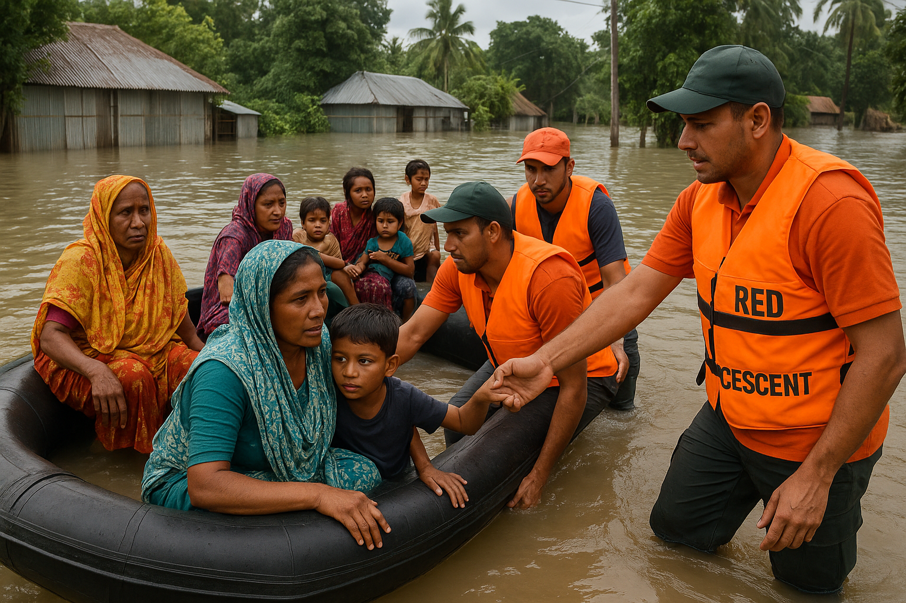
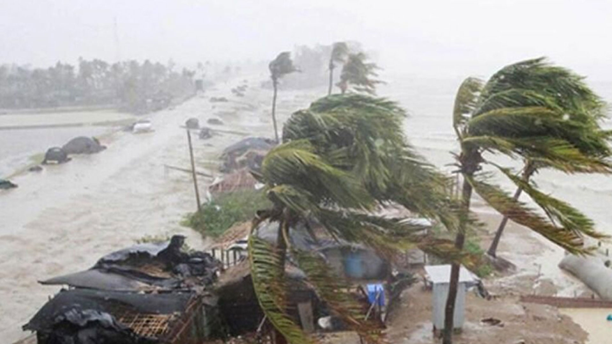

Helping the poor, Supporting education, Providing disaster relief nationwide
বাংলাদেশে প্রতি বছর বন্যা একটি সাধারণ প্রাকৃতিক দুর্যোগ, যা দেশের নিম্নভূমি ও নদীপ্রবাহের কারণে ঘটে। বর্ষাকালে অতিবৃষ্টি এবং পার্শ্ববর্তী দেশ থেকে আসা নদীর অতিরিক্ত পানি দেশের বেশিরভাগ অঞ্চলকে প্লাবিত করে। এই বন্যা ফসলের ক্ষতি, গবাদি পশু ও সম্পদের ধ্বংস এবং লক্ষ লক্ষ মানুষের বাস্তুচ্যুতির কারণ হয়ে দাঁড়ায়। তবে, বন্যার ফলে নদীর তলদেশে পলিমাটি জমে মাটির উর্বরতা বৃদ্ধি পায়, যা কৃষিতে একটি ইতিবাচক প্রভাব ফেলে। তবুও, বন্যার ক্ষয়ক্ষতি এড়াতে যথাযথ পরিকল্পনা এবং অবকাঠামো উন্নয়ন অত্যন্ত জরুরি।
Disaster preparedness, Emergency aid, Community resilience
বাংলাদেশে প্রতি বছর ঘূর্ণিঝড় একটি সাধারণ প্রাকৃতিক দুর্যোগ, যা বঙ্গোপসাগর থেকে উৎপন্ন হয়। বিশেষ করে এপ্রিল-মে এবং অক্টোবর-নভেম্বর মাসে ঘূর্ণিঝড়ের প্রবণতা বেশি থাকে। এই ঘূর্ণিঝড়গুলি তীব্র বায়ুপ্রবাহ, ভারী বৃষ্টি এবং জলোচ্ছ্বাসের মাধ্যমে উপকূলীয় অঞ্চলগুলোতে ব্যাপক ক্ষতি সাধন করে। ফসল, ঘরবাড়ি, এবং সম্পদের ধ্বংস ছাড়াও প্রাণহানির ঘটনাও ঘটে। তবে, আধুনিক আবহাওয়া পূর্বাভাস ব্যবস্থা এবং দুর্যোগ ব্যবস্থাপনা কার্যক্রমের মাধ্যমে ক্ষয়ক্ষতি কিছুটা নিয়ন্ত্রণ করা সম্ভব হয়েছে।